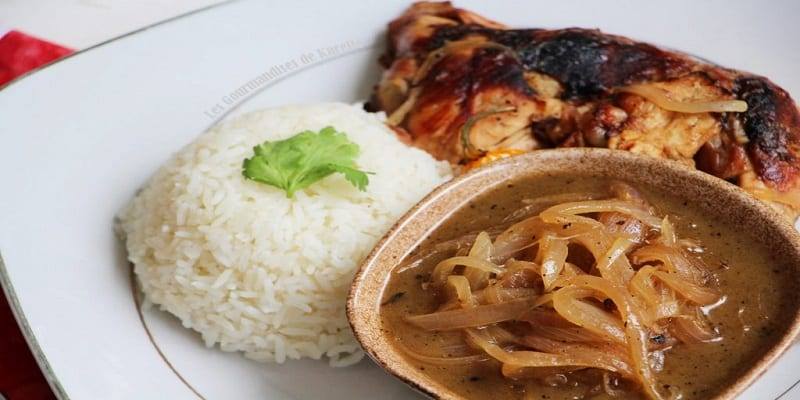

Diouf Massamba
Université Sorbonne Paris Nord
Ecole d'ingenieur Sup Galilée

Le yassa est un plat sénégalais à base d'oignons frits et de riz et qui peut être accompagné de viande marinée dans le citron puis frite ou braisée, de poulet ou de poisson. C'est un plat simple, rapide à faire et souvent apprécié de tous grâce à ses ingrédients de base simples et économiques. Découvrons ensemble les ingredients nécessaire pour cuisiner ce plat de même que sa recette .
- Pressez les 4 citrons pour en recueillir le jus puis épluchez et émincez deux oignons et écrasez la gousse d’ail. Découpez la volaille en morceaux. Dans un bol, réalisez la marinade du poulet Yassa : mélangez la moitié de l’huile avec le jus des 4 citrons, la gousse d’ail écrasée et les oignons émincés. Salez et poivrez légèrement.
- Disposez les morceaux de poulet dans un plat et recouvrez-les de la marinade. Laissez-les mariner au réfrigérateur pendant 6 à 12 h (idéalement une nuit entière). Mélangez de temps en temps pour que tous les blancs de poulet soient bien imprégnés de marinade. Retirez les morceaux de poulet de la marinade puis faites-les légèrement griller sur la braise, au four ou à la poêle.
- Ensuite, épluchez et émincez les 3 oignons restants. Émincez et épépinez le piment. Dans une marmite, mettez le reste de l’huile et faites revenir le reste des oignons. Versez la marinade. Ajoutez alors le piment, les feuilles de laurier et la moutarde. Mélangez puis ajoutez les morceaux de poulet. Laissez chauffer votre poulet Yassa dans le bouillon à feu doux pendant 1 h. Servez votre poulet Yassa bien chaud et dégustez-le aussitôt, avec du riz blanc ou du riz brisé.
Et voila ! La recette de ce plat qui vous fera voyager a travers les saveurs d'afrique n'est plus un mystère pour vous.